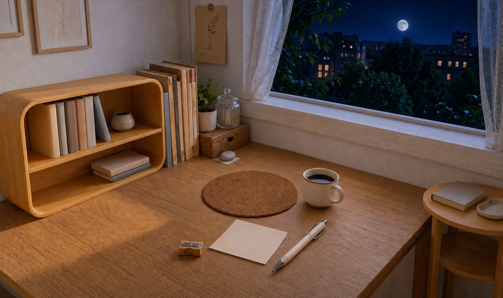

可精简对外简 PRD / 飞书正文可删或外链，不影响主闭环。
待定义方向已定，数值/素材/触发/持久化未收口，勿按猜测开发。
已交付前端静态 UI + 运行内 mock，待手机视觉验收。
待实现产品规则已有片段，代码未完整或未发布。
精简 vs 待定义 · 总览
写飞书或对外稿时，优先保留无标签段落；带「可精简」进附录；带「待定义」必须链到决策清单或主 PRD 章节，不可省略为「以后再说」。
| 主题 |
阅读块 |
标注 |
说明 |
| 事件扩充原则、COO 日期脚注、角色分工 |
块1 |
可精简 |
保留一句「内容为主、逐步加玩法」即可；法务/CEO 行移 footnote。 |
| 每日信件正文从哪来、是否接模型 |
块1·3 |
待定义 |
当前 fixture/mock；真实生成与审核链未交付。 |
| 「后续延续」跨日内容、作品挂房间 |
块1 |
待定义 |
产品目标已写，前端链路未完成（主 PRD §4.4）。 |
| 前 7 有效日 76 星与茶会/旅行算术说明 |
块2 |
可精简 |
对内经济验算保留 canonical；对外只保留阶梯表 + 36 封顶。 |
| 随机惊喜（画画 +3、纸条照片、33%、节气 24 张） |
块2·4 |
待定义 / 部分 mock |
规则散见主 PRD §7.5；素材分批；持久化 CTO。 |
| 兑换照片 10 星、窗边午后主题 |
块4 |
待实现 |
规则已定，样张/揭晓交互/验收未完成。 |
| 旅行 40 星、轻答题、分享带码 |
— |
待定义 |
见《后续决策清单》；HTML 正文刻意不收。 |
| 长期喜好 / 记忆 / 模型安全 |
块1 |
待定义 |
原则在 PRD §8；存储与删除 CTO + 法务。 |
| 服务端字段、跨设备恢复、账户幂等 |
块2·4 |
可精简（产品稿） |
产品展示可一句带过；技术见 §9 与接口交接。 |
阅读块 1 · 产品概述 → 项目边界 → 主流程
对应主 PRD §1 → §2 → §3。先建立闭环与破壳后边界，再走具体界面。
1.1 核心闭环与概念 已交付前端
今日陪伴 → 星星 → 明天呢？ → 纪念册 → 下一次活动。不做充值、抽奖、排行榜。
| 概念 | 用户看到 |
|---|
| 星星 | 可用余额（非人民币） |
| 一起 X 天 | 累计有效陪伴日；消费不减 |
| 明天呢？ | 线索；不是「进入聊天」按钮 |
可精简五概念表保留即可；「单个事件闭环」一句 + 四类事件枚举。
图 1-1 破壳后房间 HUD（全景素材 + 星星/信封运行时资源）。
真机截图：待替换。
1.2 生命周期边界 与实现对齐
| 阶段 | IAA 闭环 |
|---|
| 破壳前 | 不参与：无星星余额；画画=蛋壳 |
| 破壳后 | 信件、星星、纪念册、一起画 |
companion_started_at（环境）≠ 有效陪伴日（须完成核心动作）。
待定义若未来「破壳前预攒星」需单独立项；当前 PRD/代码均为破壳后。
1.3 交付边界与主流程七步
- 已合并 信件、明日角色、双份画画奖励、纪念册、茶会（mock）
- 待实现 兑换照片、完整随机惊喜
- 待定义 旅行、轻答题、分享、真实记忆
- 进房间 → 左上星+天数，左下信
- 点信读内容（不自动弹信）
- 完成核心动作
- 结算 +X 星
- 可选「明天呢？」→ 聊天
- 收下 → 纪念册
- 百宝箱 → 回忆 / 活动
可精简块1 对外版：2.2 交付表缩成三行（已交付 / 待实现 / 不做）。
图 1-3 百宝箱入口图标（纪念册第一入口）。流程图可自本页导出 PDF。
阅读块 2 · 星星与有效陪伴日（§5）
经济规则核心；简稿务必保留两张表 + 36 星封顶 + 破壳后生效。
2.1 基础阶梯 已交付前端
按累计有效陪伴日；当天首次结算冻结基数。
| 有效日 | 基础星 | 有效日 | 基础星 |
|---|
| 1–2 | 10 | 30–44 | 15 |
| 3–6 | 11 | 45–59 | 16 |
| 7–13 | 12 | 60–89 | 17 |
| 14–20 | 13 | 90+ | 18 |
| 21–29 | 14 | |
待定义随机额外星是否计入「36 封顶」— 已定义部分见 §7.5.1（+3 另计）；其余惊喜未收口。
2.2 结算点摘要
| 动作 | 星 | 有效日 |
|---|
| 读信 / 明天呢？ | 无 | 无 |
| 普通核心动作 | 基础×1 | +1（首次） |
| 一起画 · 画布就绪 | 基础×1（共用额度） | 无 |
| 画好了 · 导出 | 额外=基数 | +1（首次） |
| 茶会确认完成 | 无基础 | +1（共用） |
常规日最多 两份基数 · 封顶 36。日界：Asia/Shanghai。
可精简「76 星 / 七个有效日」算术段落 → 链 canonical §5.2。
今天想和你画一会儿
「纸和笔都准备好了。」
一起画
图 2-2 信纸上方 +X 示意（CSS 合成，非动效录屏）。
2.3 星星反馈
- 信纸上方真实 +X，~2s 挤压弹出
- 关信后左上余额轻量回应，不重播声震
- 减弱动效 → 静态数值
待定义模型对话不得口头承诺规则外奖励 — 审核策略 CTO/合规。
替换位：COO 手机录屏「收星 + 关信回房间 pulse」→ 贴于 docs/主PRD/assets/iaa-showcase/ 并改此处 src。
阅读块 3 · 房间与信件（§4.1–4.4）
阅读顺序上在星星规则之后；展示上合并入口 + 信纸 + 明天呢？
3.1 入口布局 已交付前端
- 左上：星 + 一起 X 天 + 时钟
- 左下：信封（打开即消红点）
- 右下：设置 + 百宝箱 → 纪念册
可精简与 04 今日心情分工一句带过即可。
3.2 到信提示
每日首次进房：按钮内纸飞机→信封 ~1s；不自动开信；可短音效 0.28s。
待定义真机「到信动画 + 音效」仍标「待验收」（验收清单）。
3.3 信纸 · 废止项
无「陪伴/聊天」分栏、无「进入聊天」文字钮；信不入聊天记录。
外出示例：替它收好纸条 → 回应 + 可选照片惊喜（规则 §7.5.2）。
待定义每日信件正文池、外出/在家切换逻辑（Story）— 当前 mock。

小纸条
「我去看看风把叶子吹到了哪里。」
替它收好纸条
明天呢？ ▾
图 3-2 外出信纸结构示意。
3.4 明天呢？与聊天
| 场景 | 行为 |
|---|
| 在家 | 线索 + 静态角色探出 → 点进聊天 |
| 外出 | 仅线索，无角色 |
| 点击明天呢？ | 不发星、不加日 |
待定义明日线索生成规则（兴趣/愿望）— 无远程模型授权。
图 3-3 明日角色使用正式 stare.webp（静态）。
阅读块 4 · 一起画 · 纪念册 · 茶会（§6 · §7.1–7.3）
破壳后玩法与消费；兑换与随机惊喜细则见总表外链。
4.1 一起画 已交付前端
复用破壳前工具；按钮「画好了」；至少一笔真实笔迹；不写入蛋壳。
开始奖 + 完成额外奖；中途退出保留开始奖与运行内草稿。
待定义关小程序后草稿/作品恢复 — 产品目标有描述，CTO 持久化未接。
替换位：微信开发者工具「一起画」页截图（含画好了 / 开始 +X）。
4.2 纪念册结构
回忆｜活动；刚完成内容可直接收下，不得再花星买一遍。
可精简活动列表文案「开始 · 需花费 X 星」保留一条示例即可。
图 4-1 纸条惊喜 · 小留影
图 4-2 节气拍立得（运行素材）
4.3 兑换照片 待实现
- 10 星 · 窗边午后 · 兑换前只见配文
- 成功准备才扣星；已拥有不重复扣
待定义揭晓交互终稿、样张验收 — Q29–Q36 已定向但未发布。
4.4 窗边茶会 已交付前端
- 首次免费；之后 20 星；须二次确认才结算
- 完成计有效日，不发基础星
- 外出不可新开始
可精简清茶/花茶两句回应可放附录。
替换位：茶会详情 → 选茶 → 确认 → 收下 四步截图。